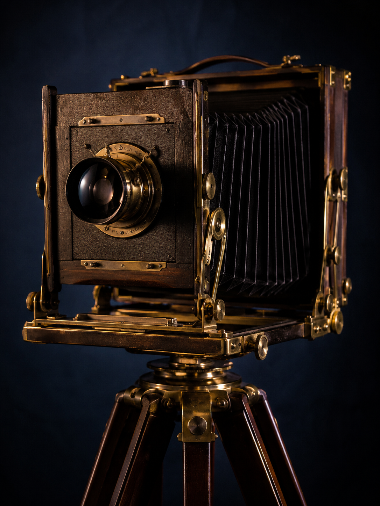
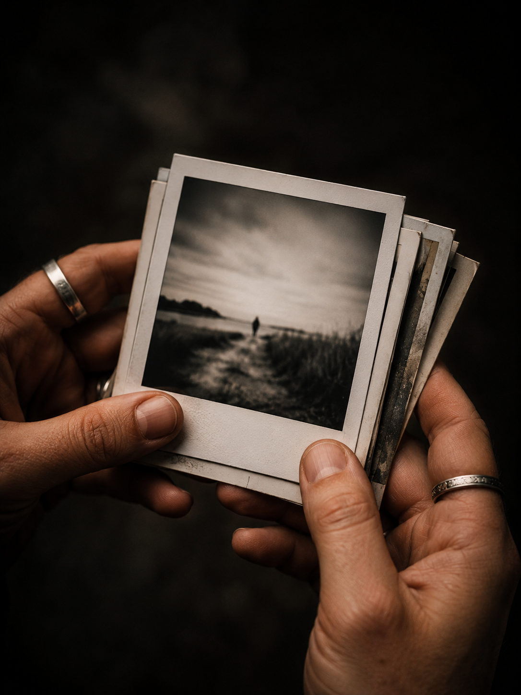
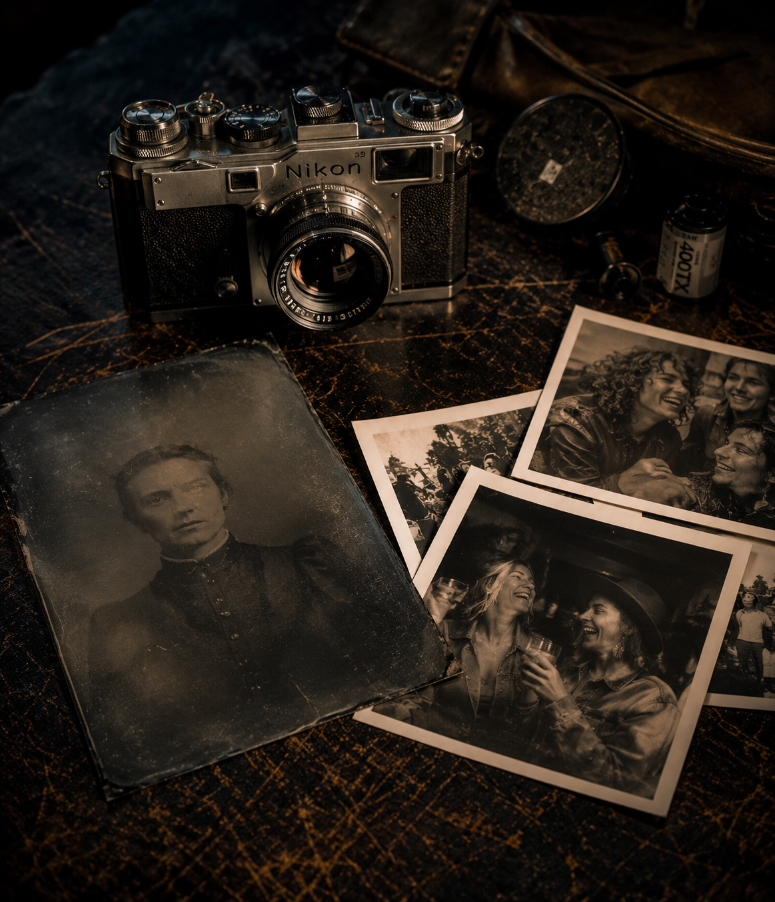
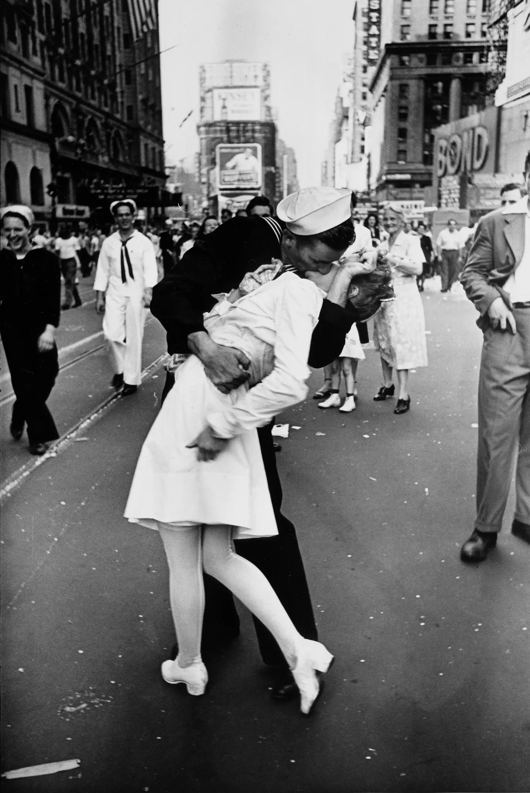
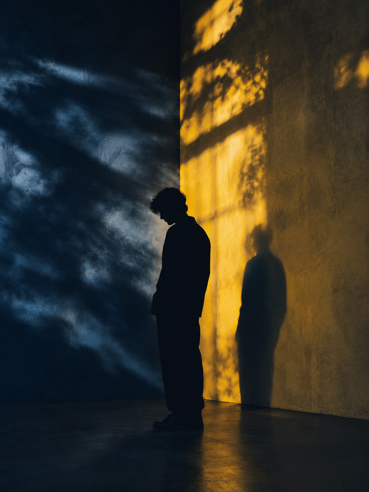
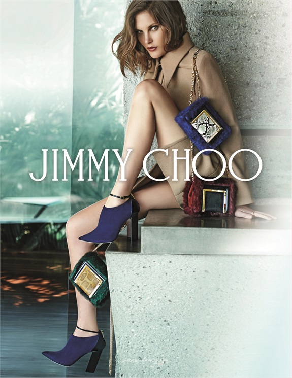

"La evolución de la fotografía y su transformación en narrativa emocional digital."
Cámaras fotográficas que usaban placas de diversos elementos sobre la que se imprimía la foto por el efecto de "Cámara Oscura" y la reacción del elemento utilizado, con la luz.
Las primeras fotografías mostraban personas con semblante estoico, y en ocasiones ceremoniales, la fotografía era una ocasión particular. Las cámaras análogas comerciales permitieron capturar momentos más informales y otro tipo de expresiones faciales que reflejaban mayor rango de emociones.


Las imágenes se capturan de manera oportuna y absolutamente fortuita, recayendo el peso emocional en las circunstancias y la composición de cada cuadro. Algunas fotografías pueden ser tan impactantes que podrían rayar en los límites de la sensibilidad moral del espectador.

Las composiciones se logran mediante una escenografía y temáticas y técnicas creativas en ambientes controlados que, en conjunto con la edición digital, permiten una gran gama de resultados.

Similar a la foto artística, se logra en ambientes controlados, pero con la finalidad de apelar no tanto a emociones, sino a impulsos. Estas reacciones se logran gracias al conjunto de la composición y factores psicológicos de elementos dentro de ésta.
Valiéndose totalmente de la tecnología para su creación, se pueden crear atmósferas que emulen el mundo real y generen sentimientos de estrés como podría se en el caso de un juego de horror y supervivencia, u otras fantásticas que usen elementos más coloridos para atraer públicos más jóvenes y generar experiencias de juego más divertidas.